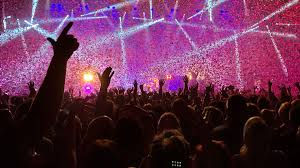

En este trabajo hablaré acerca de cómo se conoce a la gente en los conciertos.
Desarrollo
Si en algún momento de tu vida has disfrutado de un concierto en vivo, te puedes dar cuenta
que aparte de la genial música, la compañía y la gente que te rodea hace que esa experiencia
sea increíble.
Yo creo que aunque los conciertos no estén técnicamente diseñados para conocer gente nueva,
éstos "se dan" para hacerlo. Ya que yo he conocido gente increíble en conciertos.
Motivación
Lo que me motivó a realizar este blog de este tema son mis amistades a causa de los
conciertos que he asistido.
Concert wallpaper
Ranking
22/11/2021
Top 10 conciertos
Se realizará un top de los 10 conciertos.
Arcade Fire
Jay-Z and Kanye West
Daft Punk
Prince
Foo Fighters
Beyonce
David Bowie
Led Zeppelin
Radiohead
Queen

Concert wallpaper
Sitios oficiales
22/11/2021
5 sitios oficiales para asistir a conciertos
Se realizará un listado con links a páginas relacionadas con conciertos.
Yo incluiría la experiencia completa de una persona del público (de cómo se prepara, etc.)
Yo creo que varias personas pensarán de igual manera, que este video no necesita
introducción.
24/01/2022
El Fanatismo Político y los conciertos.
DESDE hace algunas semanas, uno de los órganos periodísticos marcadamente de derechas, con
una consecuencia digna de mejor causa ha hecho aparecer varios artlculos sosteniendo una
tesis simplista y novisima, según la cual el ejecutar obra~ de música rusa significa
transformar los conciertos sinfónicos en palestra de agitación
comunista.1
Aun cuando semejante doctrina ha merecido
comentarios más o menos jocosos y la censura o el silencio de parte
de los demás diarios y revistas, el hecho de que entre nosotros despunte un criterio de
tal estrechez e ignorancia no puede pasar sin
que en esta Revista precisemos algunos conceptos sobre la materia
en debate. 1
Para el articulista que inició la exposición de este retroceso hacia
los peores momentos del fanatismo político invasor de otras esferas, el argumento se
plantea en la siguiente forma: en Rusia la
música es un asunto del Estado, los compositores son ayudados y
sostenidos por el Estado y, afirma el articulista, ninguna composición puede darse a
conocer sin que reciba la venia de Stalin en
persona.1
De estos hechos deduce, naturalmente, que obras como
la Sinfonía Clásica de Prokofieff y el Concierto para Piano y Orquesta de Schostakovitch
envuelven una especie de mensaje musical que el patriarca del comunismo ruso enviaría a
sus adeptos
y que la Orquesta Sinfónica de Chile se encarga de transmitir fielmente.1
La formación del profesorado y los conciertos didácticos.
En este artículo se presenta una experiencia de formación del profesorado llevada a cabo
en
el área de la educación musical y en un contexto poco habitual: una orquesta y la labor
educativa
llevada a cabo por su Departamento Educativo, a través de conciertos didácticos
programados para
niños y jóvenes escolarizados y cursos de formación para los docentes
participantes.2
Las diferentes
estrategias metodológicas encaradas constituyen un modelo a ser tenido en cuenta -y no
solamente
en dicho ámbito-, ya que configuran un ejemplo de interacción intra y extraescolar para
la
formación del profesorado en activo.2
Se describen las características generales de los Conciertos Didácticos de la Orquesta
Ciudad de Granada (OCG), del trabajo interdisciplinar realizado para su preparación, y
de la
formación previa y posterior llevada a cabo con el profesorado asistente. 2
Asimismo, se
proporcionan datos significativos de asistencia y participación del profesorado en las
actividades
educativas de la OCG, se comenta la valoración que realiza el profesorado acerca de la
formación
recibida y, finalmente, se plantean algunas conclusiones de la labor de formación
llevada a cabo por
la Orquesta. 2
Conciertos del sábado
La vida musical española de los últimos 30 años sería muy otra
sin la presencia constante de varias agrupaciones que la han
defendido y divulgado con tenacidad e inteligencia. Han encargado
obras nuevas, han propiciado otras muchas con su mera existencia,
han estrenado y reestrenado muchas más, las han grabado en disco
o en la radio y, en resumen, han contribuido decisivamente a una
mayor riqueza y variedad de nuestro panorama musical.
3
El Grupo LIM (Laboratorio de Interpretación Musical) es uno de
ellos. Surgió en el otoño de 1975 y ha cumplido ya más de un
cuarto de siglo de ejemplar dinamismo. Dos libros-documentos,
además de una enorme cantidad de críticas, crónicas, entrevistas,
programas de conciertos..., dan cuenta pormenorizada de las dos
primeras décadas de su existencia: LIM 75-85• Una síntesis de la
música contemporánea en España, Oviedo, Ethos-Música, 1985; y
Marta Cureses (coord.), LIM 85-95• Una síntesis de la música
contemporánea en España (II), Madrid, Alpuerto, 1996. A ellos nos
remitimos. 3
La Fundación Juan March ha contado con la colaboración del
LIM en varias ocasiones. Aquí se celebró el Segundo ciclo de sus
conciertos en noviembre de 1976, y han participado en nuestros
ciclos en 1982 (Centenario Igor Stravinsky), 1983 (La Escuela de
Viena), 1985 (Música y tecnología), 1987 (Música norteamericana del
siglo XX), 1988 (Presentación del Catálogo de obras de Joaquín
Homs) y 1993 (estreno del encargo a Jesús Villa Rojo Canta, pájaro
lejano), además de participar en nuestros Conciertos de Mediodía
(1987) y de Sábados: 1990, Ciclo Alrededor del clarinete; 1999, XXV
Ciclo de conciertos del LIM; 2000, XXVI Ciclo de conciertos del LIM,
que quiso ser un resumen antológico de algunas de las muchísimas
obras que el LIM ha presentado en sus 25 ciclos anteriores; 2001,
XXVII Ciclo de conciertos LIM: En el tiempo; y 2002, XXVIII Ciclo de
conciertos del LIM.
3
El XXX Ciclo de conciertos del LIM que ahora comienza ha
contado con la colaboración de la Consejería de Cultura y Deportes
de la Comunidad de Madrid, y del INAEM (Ministerio de Cultura), a
cuyos directivos les damos las gracias.
3


 Mi video
compu
Mi video
compu Meme
Meme